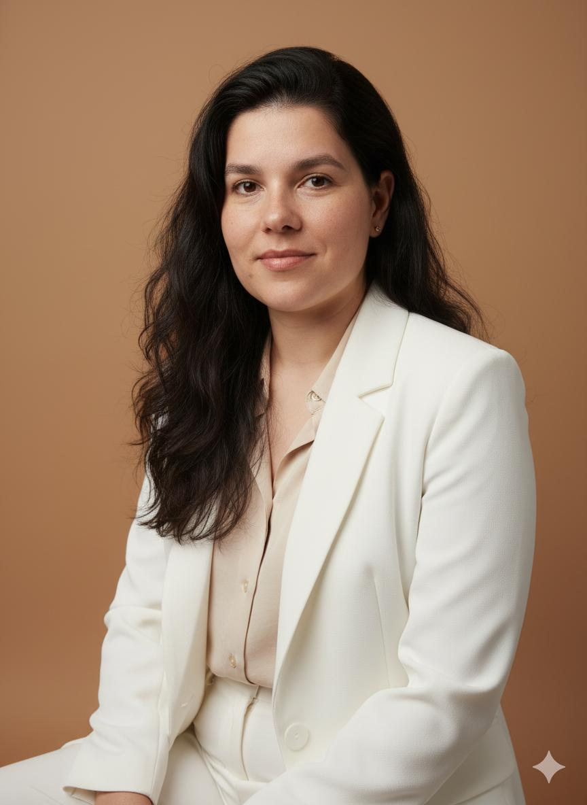

Recrutamento & Seleção · Treinamento e Desenvolvimento
Sou estudante de pós-graduação em Psicologia Organizacional e Gestão de Pessoas, formada em Recursos Humanos pela Estácio e capacitada em Recrutamento e Seleção pelo Sebrae. Apaixonada pelo desenvolvimento humano e pela construção de ambientes de trabalho positivos, busco minha primeira oportunidade na área de RH. Meu objetivo é contribuir para a atração, desenvolvimento e retenção de talentos, aliando conhecimento técnico, empatia e foco em resultados
Visualizar Currículo
Experiência prática apoiando admissão, integração e desligamento de colaboradores, com gestão de acessos corporativos alinhada às políticas de Segurança da Informação e RH.
Formação em andamento na FAAP com foco em análise comportamental, diagnóstico organizacional e programas de bem-estar, aplicando teoria a mais de 10 anos de vivência em operações corporativas.
Participação em projetos de transformação de processos e acompanhamento de indicadores operacionais, sempre com foco em tornar a experiência do colaborador mais fluida.
Sou profissional com mais de 10 anos de atuação em Tecnologia da Informação, período em que construí uma interface constante com as Recursos Humanos — apoiando processos de admissão, integração, desligamento e gestão de acessos corporativos em empresas de grande porte.
Hoje curso Pós-Graduação em Psicologia Organizacional e Gestão de Pessoas pela FAAP, com formação prévia em Gestão de Recursos Humanos. Essa combinação me deu uma visão pouco comum: entendo tanto os sistemas e processos que sustentam uma operação quanto as pessoas que dependem deles no dia a dia.
Hoje, busco minha primeira oportunidade formal dentro de Recursos Humanos — o próximo passo natural de uma trajetória construída, até aqui, na interface entre tecnologia e pessoas. Quero unir organização, comunicação e visão analítica à experiência prática de mais de uma década cuidando da jornada de colaboradores nas empresas onde atuei.
Psicologia Organizacional e Gestão de Pessoas — conclusão prevista para 2027.
Gestão de Recursos Humanos — concluída em dezembro de 2012.
Recrutamento e Seleção · FGTS Digital · Power BI.
Estou aberta a oportunidades e processos seletivos na área de Recursos Humanos. Será um prazer conversar sobre como posso contribuir com o seu time.